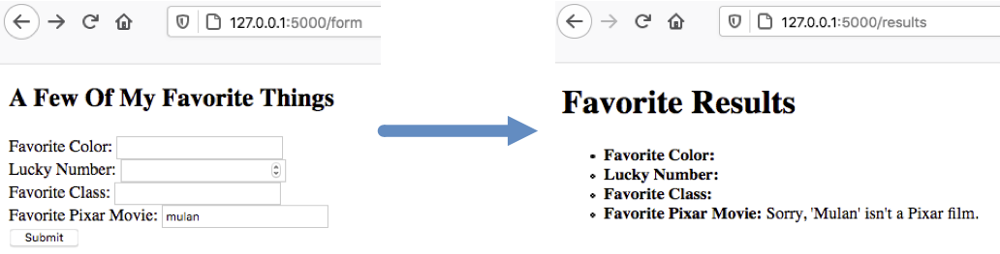

21.7. Form Validation with Flask¶
Whenever we ask users for input, it is critical that we validate the information they submit. Users will often submit something that doesn’t fit our requirements or doesn’t make sense in some way. Most of the time, this happens by accident. Sometimes, however, users will try to mess with our application by sending bad data.
Our applications should respond by rejecting forms that contain invalid information. We should also include code that tells the user what they did wrong.
21.7.1. Validation¶
Validation checks to make sure that data submitted by a user meets the requirements for our program. For example, if we want the user to schedule an appointment, then we need to make sure they enter a date and time within a certain range.
Invalid data might just produce incorrect, harmless results. However, it might cause our program to crash, or allow outside users to access our code. Either way, we want to make sure our applications catch any errors and deal with them in a smooth way.
Client-side validation takes place inside the browser window, and it
prevents a form from being submitted. In this case, the invalid data never
leaves the user’s screen. In the Forms chapter,
we added client-side validation by including the type and/or required
attributes inside an <input> tag.
Server-side validation occurs after the user clicks Submit and sends an HTTP request over the internet. In this case, the server receives the request and runs some code to check the data. If a problem is found, the server sends a response back to the user’s browser with information about what went wrong. Although the faulty data reaches the server, it doesn’t make it very far. The program catches and responds to a mistake before it can cause any harm.
Whenever we build a web application that requires user input, we should include both types of validation.
21.7.1.1. Why Do Both?¶
Each type of validation has its strengths and weaknesses, so using both helps us cover the bases. Here’s a summery of what each type brings to our application:
Client-side:
Pro: Checks data in real-time, and prevents bad data from being sent to the server.
Pro: HTML attributes make it simple to put in place.
Con: Can be easily fooled, turned off, or bypassed completely by the user.
Server-side:
Pro: Cannot be bypassed by the user.
Pro: Allows programmers to write much more specific checks for the data.
Con: Requires more work to put in place, and it only operates after a request reaches the server.
Whenever our applications collect user input, we should never assume that the information will be valid or safe. We must always check the data to make sure it will work with our program. By combining client and server-side validation, we decrease the chances that our program will crash when it receives bad data.
21.7.2. Server-Side Validation¶
In our favorite_form template, we can add client-side validation to the
Favorite Pixar Movie field by including the required attribute.
However, this just checks to make sure the user types something into the field.
They could easily submit something other than a Pixar
film title.
Let’s add some server-side validation to make sure the user chooses an actual
Pixar movie. Submitting the form sends data to the /results route, so
that’s where we need to add some new Python code.
Try It!
Open
hello.pyand find theresults()function. Your code should include arequest.formstatement for each of the four input fields. However, in this exercise we’re only going to pay attention to the movie title.23 24 25 26 27 28
@app.route('/results', methods=["POST"]) def results(): best_pix = request.form['best_pix'] # Other request.form statements... return render_template('form_results.html', best_pix = best_pix)
To help with the validation, it’s useful to cast text entries into all lowercase or uppercase. We should also remove any leading or trailing whitespace. Modify line 25 as follows:
23 24 25 26 27 28
@app.route('/results', methods=["POST"]) def results(): best_pix = request.form['best_pix'].lower().strip() # Other request.form statements... return render_template('form_results.html', best_pix = best_pix)
As of December, 2020, Pixar had released 23 full-length movies. Copy/paste the list of the titles into your code.
23 24 25 26 27 28 29 30 31 32 33
@app.route('/results', methods=["POST"]) def results(): best_pix = request.form['best_pix'].lower().strip() # Other request.form statements... films = ["toy story","a bug's life","toy story 2","monsters, inc.", "finding nemo", "the incredibles","cars","ratatouille","wall-e","up", "toy story 3","cars 2", "brave","monsters university","inside out", "the good dinosaur","finding dory", "cars 3","coco","incredibles 2", "toy story 4","onward","soul"] return render_template('form_results.html', best_pix = best_pix)
Note that all of the titles in the list are lowercase. This matches the format of the string assigned to
best_pix.Add a conditional to check if the title entered by the user is NOT part of the
filmslist:23 24 25 26 27 28 29 30 31 32 33 34 35 36 37 38
@app.route('/results', methods=["POST"]) def results(): best_pix = request.form['best_pix'].lower().strip() # Other request.form statements... films = ["toy story","a bug's life","toy story 2","monsters, inc.", "finding nemo", "the incredibles","cars","ratatouille","wall-e","up", "toy story 3","cars 2", "brave","monsters university","inside out", "the good dinosaur","finding dory", "cars 3","coco","incredibles 2", "toy story 4","onward","soul"] if best_pix not in films: best_pix = "Sorry, '{0}' isn't a Pixar film.".format(best_pix.title()) else: best_pix = best_pix.title() return render_template('form_results.html', best_pix = best_pix)
If the boolean expression in line 33 returns
True, then we assign an error message to thebest_pixvariable. IfFalse, line 36 casts the user’s entry into Title Case.Save your code, then launch the application and navigate to
http://127.0.0.1:5000/form. Test out the validation code by entering different options in theFavorite Pixar Moviefield. Be sure to test cASe differences, leading/trailing whitespace, non-Pixar movies, and (of course) your favorite Pixar film.The user sees an error message on the results page.¶
Following the example above, add validation for the color input. Limit the
user to only 1 of 3 choices: red, green, or blue.
Note
You could replace the color input with either radio buttons or a select
menu. This would fit well with client-side validation.
However, you need to practice server-side validation! For now, keep the
input as type="text".
21.7.3. A Better User Experience¶
With server-side validation, the user only finds out if they did something wrong AFTER they submit the form. Also, they will be on the results page, which means they need to navigate back to the form in order to fix their mistakes. Many users will find this annoying, or won’t know how to go back a step.
We want to give our users a smoother experience if they make a mistake. One thing we can do is to return them to the original form instead of rendering the results page. We will handle this in the next chapter.
21.7.5. Check Your Understanding¶
Question
Which type of validation prevents form submission?
- Client-side
- Server-side
- Both
- Neither
Question
Which type of validation can be used to display error messages on a webpage?
- Client-side
- Server-side
- Both
- Neither
Question
Which type of validation provides more detailed control over checking user input?
- Client-side
- Server-side